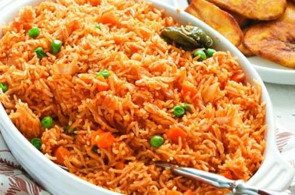

JOLLOF RICE RECIPE

Description
Jollof or jollof rice, is a rice dish from West Africa.
The dish is typically made with long-grain rice, tomatoes, onions, spices, vegetables and meat
Ingredients
- 1 red bell pepper / tatashe
Steps
- Blend your tomatoes, scotch bonnet, and tatashe together.
- Put your rice into a bowl and soak with hot water.
- Heat up your oil.
- Add your chopped onions and allow them to fry.
- Add and fry your blended ingredients and purée.
- Allow them to fry until you get rid of the sour taste (about 10-15 minutes).
- Add your maggi, garlic, ginger, curry, thyme and salt.
- Mix it all together. Be careful with your maggi as you do not want it too salty (2 maggi cubes for a cup of rice). Add your stock or water, and mix too. Taste to adjust to any seasoning.
- Pour your rice into the pot and mix together.